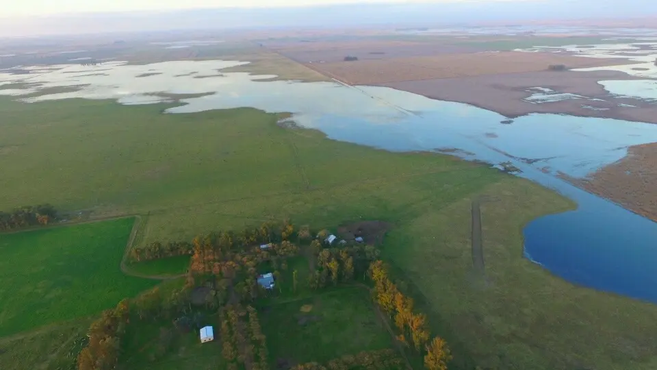

Servicio
Asistencia técnica de maquinaria
- Cobertura
- Buenos Aires
- Modalidad
- Atención en campo
A cotizar
Ver condiciones


Muestreo, labores, asistencia técnica y logística con cobertura, modalidad y responsable declarados.
Provincia, localidades o radio declarados por quien presta el servicio.
Por hectárea, visita, proyecto o unidad que la publicación efectivamente informa.
Equipamiento, disponibilidad y próximo paso sólo cuando existen datos.
Indicá cobertura, modalidad y responsable para que la propuesta pueda compararse.